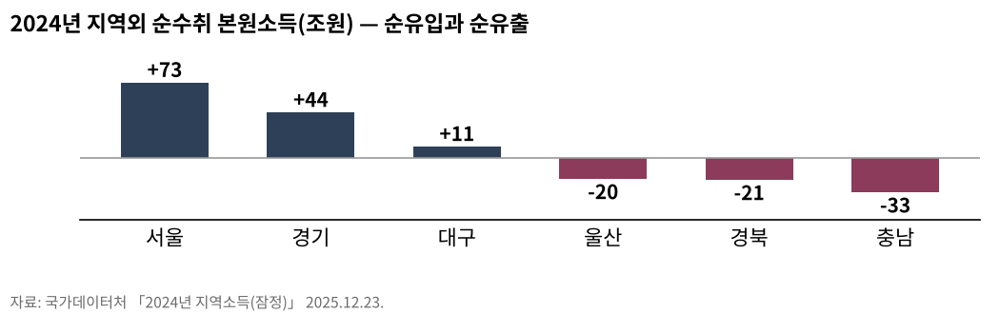
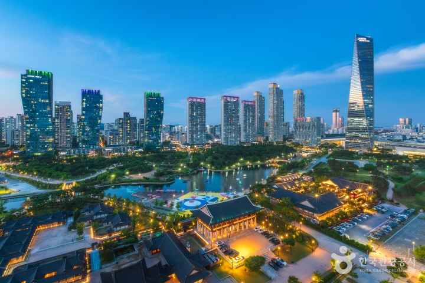
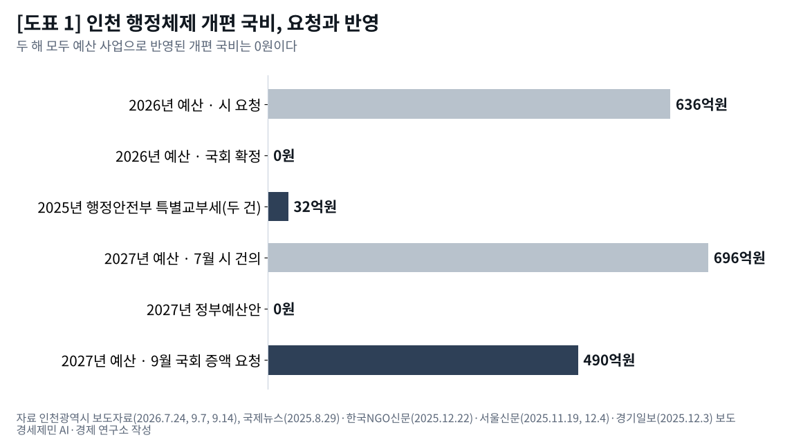
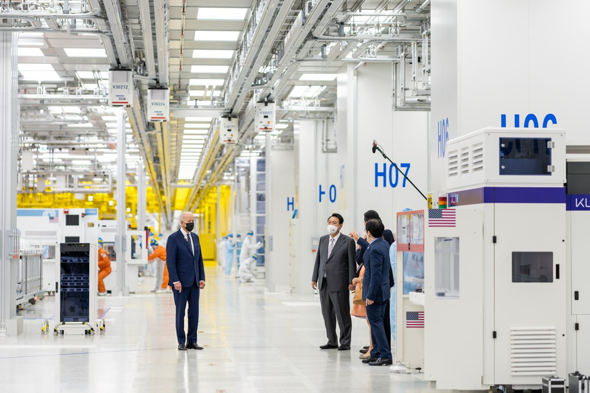
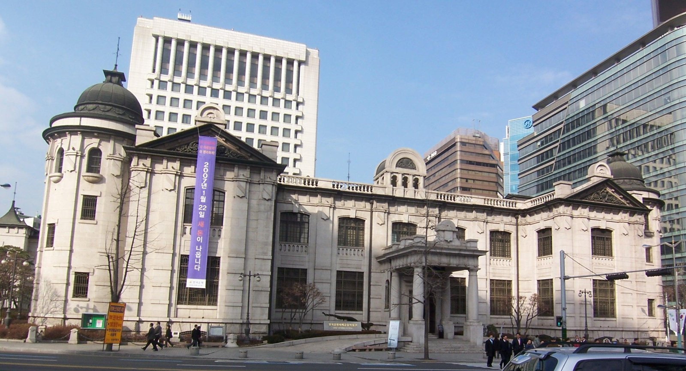

교통정책브리핑1편
공항과 철도, 무엇을 먼저 놓을 것인가

복지 브리핑5편
돌봄과 교육과 의료

불평등 브리핑3편
AI와 계층 이동과 수도권·비수도권

산업 브리핑4편
플랫폼과 에너지와 식량

인프라 브리핑3편
물과 교통과 데이터

지방재정 브리핑2편
신설 자치구와 교부금, 국비와 시비

수출·고용 브리핑1편
수출 1209억달러 역대 최대, 제조업 고용보험 가입자는 외국인 빼면 4000명 줄어

가계부채 브리핑2편
[가계부채 브리핑] 가계대출 9개월 만에 2조2000억원 감소, 주택담보대출은 3조3000억원 늘어
거시경제 브리핑1편
[거시경제] 이윤은 18.5% 늘고 임금은 1.9% 늘었다

주거 브리핑2편
[한국경제 8대 불편한 진실①] 임대차 열 건 중 일곱이 월세, 전세 끝물의 세입자
주택공급 브리핑1편
[주택공급 브리핑①] 수도권 착공 목표 26만8000호, 정부 전망도 최대 5만호 미달
교통정책브리핑1편
복지 브리핑5편
- [한국경제 8대 불편한 진실④] 국민연금 소득대체율 43%, 평균 노령연금은 70만6150원43%는 40년 가입 기준, 노령연금 평균은 1인 최소생활비의 50.7%26.10.22
- [한국경제 8대 불편한 진실③] 공무원연금 수급자 69만명, 적자는 일반회계가 메운다공무원연금 국가보전금 2024년 7조4712억원, 2025년 결산 재정수지 8조3000억원 적자26.10.22
- [한국경제 불편한 진실⑩] 교육 — 사교육비 27조5351억원, 줄었다는 통계의 함정총액은 5.7% 줄었는데 학생 수는 2.3%밖에 줄지 않았다26.08.04
- [한국경제 불편한 진실⑨] 돌봄 — 멈추면 나라가 멈추는데, 값은 최저임금 언저리무급 가사·돌봄노동만 한 해 582조원, 국내총생산의 22.8%26.07.28
- [한국경제 불편한 진실⑪] 의료 — 3분 진료가 떠받친 세계 최고 접근성, 그 청구서가 온다26.07.05
불평등 브리핑3편
산업 브리핑4편
- [한국경제 8대 불편한 진실⑥] K방산 4사 영업이익 4조6324억원, 이익은 공급망 아래로 내려가나2025년 방산 수출 수주 154억4000만달러, 1년 새 62.5% 늘어26.10.22
- [한국경제 불편한 진실⑭] 식량 — 값싼 수입 밥상은 공짜가 아니라 '보험 미가입'이다국내에서 쓰는 곡물의 5분의 4가 수입이다. 곡물자급률은 21.6%까지 내려앉았다 (2024년 기준)26.07.07
- [한국경제 불편한 진실⑫] 플랫폼 — 주문 한 건에 매출 3할이 사라진다배달 중개이용료는 6.8%에서 9.8%로 올랐다가 거래액별 2.0~7.8%로 갈렸다26.07.05
- [한국경제 불편한 진실⑬] 에너지 — 싼 전기요금은 공짜가 아니라 '외상'이다26.07.05